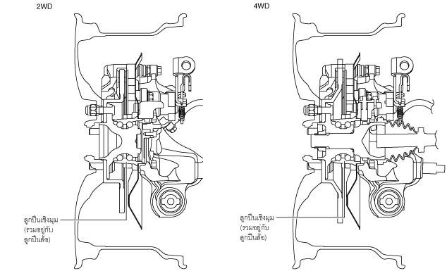

ดุมล้อหลัง
id031200110000
จุดประสงค์/การทำงาน
• ลูกปืนเชิงมุมที่มีแรงต้านทานการหมุนต่ำได้ถูกนำใช้ จึงทำให้ได้สมรรถนะการขับขี่ที่ดียิ่งขึ้น
• ลูกปืนแบบอัดสำเร็จซึ่งไม่จำเป็นต้องตั้งค่าพรีโหลดได้ถูกนำมาใช้ จึงทำให้ได้การซ่อมบำรุงที่ง่ายยิ่งขึ้น
ภาพตัด

ac5wzn00001133